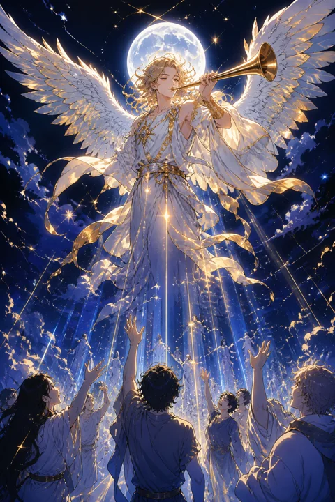

이 게시물은 쿠팡 파트너스 활동의 일환으로, 이에 따른 일정액의 수수료를 제공받습니다.


XX 심판 카드 — 과거를 딛고 일어서라는 부름
심판 카드 한눈에 보기
심판 카드 상징 읽기

동네보살의 카드 그림은 전통 라이더–웨이트 덱의 뜻을 새 그림으로 옮긴 것입니다. 아래 상징 설명은 전통 덱의 그림을 기준으로 합니다.
구름 사이로 커다란 날개를 편 천사가 나팔을 불고 있습니다. 전통적으로 대천사 가브리엘로 여겨지며, 나팔 소리는 잠들어 있던 존재를 깨우는 부름과 각성을 뜻합니다.
나팔에 매달린 깃발에는 붉은 십자가가 그려져 있습니다. 서로 다른 방향의 힘이 한 점에서 만나는 이 문양은 대립하던 것들이 화해하고 균형을 되찾는 순간을 상징합니다.
아래쪽 바다 위 관 속에서는 남자와 여자, 아이가 두 팔을 벌리고 일어나고 있습니다. 가족처럼 모인 이들은 삶의 모든 부분이 함께 새로워지는 전환을 보여줍니다. 멀리 솟은 눈 덮인 산맥은 쉽게 흔들리지 않는 진실과 앞으로 올라설 더 높은 단계를 나타냅니다. 일어나는 사람들의 몸이 회색빛인 것은 오래 잠들어 있던 과거의 자신을, 위를 올려다보는 시선은 더 큰 뜻에 응답하려는 마음을 나타냅니다.
심판 카드 정방향 뜻
정방향 심판은 지나온 시간을 돌아보고 다음 단계로 나아가라는 분명한 부름입니다. 끝난 줄 알았던 일이 다시 의미를 갖게 되거나, 오래 미뤄둔 결정을 이제는 내려야겠다는 확신이 드는 시기입니다.
이 카드는 과거를 부정하라고 하지 않습니다. 오히려 실수와 성공을 모두 정직하게 평가한 뒤, 거기서 얻은 교훈을 가지고 새 사람처럼 일어서라고 권합니다. 과거의 경험이 비로소 쓸모를 찾는 순간이라고도 할 수 있습니다.
마음속에서 계속 울리던 목소리가 있다면 귀를 기울여 보세요. 하고 싶었지만 외면해 온 일, 되찾고 싶은 자신의 모습이 지금의 소명일 수 있습니다. 그 부름에 응답하는 작은 행동 하나가 인생의 새 장을 여는 열쇠가 됩니다. 다른 사람의 인정보다 내 마음이 납득하는 선택인지가 이번 결정의 기준이 됩니다.
심판 카드 역방향 뜻
역방향 심판은 부름이 들려와도 몸이 선뜻 일어나지 않는 상태를 비춥니다. 지난 선택에 대한 후회, 그때 다르게 했어야 했다는 자책이 발목을 잡아 새로운 시작을 미루게 되는 흐름입니다.
때로는 남의 평가를 지나치게 의식해 스스로를 가혹하게 심판하고 있을 수도 있습니다. 하지만 이 카드가 뒤집혀 나왔다는 것은 문이 닫혔다는 뜻이 아니라, 문 앞에서 짐을 내려놓을 준비가 덜 되었다는 뜻에 가깝습니다.
열쇠는 용서, 그중에서도 자기 자신을 향한 용서입니다. 과거의 나는 그때 알던 만큼 최선을 다했다고 인정해 주세요. 그 인정이 이루어지는 순간 역방향의 망설임은 정방향의 결단으로 천천히 돌아설 수 있습니다. 믿을 만한 사람과 지난 일을 나누며 마음의 매듭을 하나씩 풀어 가는 것도 좋은 방법입니다.
연애에서 심판 카드
솔로라면 지난 연애를 돌아보며 내가 반복해 온 패턴을 이해하게 되는 시기입니다. 그 깨달음 덕분에 이전과는 다른 기준으로 사람을 보게 되고, 한층 성숙한 만남을 준비할 수 있습니다. 오래전에 알던 사람과 연락이 닿아 새로운 감정이 싹트는 경우도 이 카드와 잘 어울립니다.
연애 중이라면 관계를 다시 정의해야 하는 전환점에 서 있습니다. 동거나 결혼 이야기처럼 한 단계 나아갈 결정이 떠오르거나, 쌓아둔 서운함을 정리하고 새 약속을 맺는 대화가 필요해질 수 있습니다. 지난 잘잘못을 따지기보다 앞으로 어떤 관계가 되고 싶은지에 초점을 맞출 때 두 사람 모두 한결 가벼워집니다. 과거의 상처를 이유로 지금 곁의 사람을 판단하지 않도록 스스로의 기준을 새로 세워 보세요. 새로운 약속은 거창하지 않아도 서로가 지킬 수 있는 것이면 충분합니다.
재회·속마음 질문에서 심판 카드
재회 질문에서 심판은 재회 카드로 자주 언급될 만큼 과거 인연이 다시 부름을 받는 흐름과 잘 맞습니다. 상대 역시 지난 관계를 돌아보며 자신의 부족했던 점을 생각하고 있을 가능성이 있습니다.
다만 이 카드의 재회는 예전으로 돌아가는 것이 아니라 한 단계 성장한 두 사람이 다시 만나는 것을 뜻합니다. 헤어진 원인을 서로 인정하고 정리하지 않은 채 감정만으로 합치면 같은 결말을 반복하기 쉽습니다. 진솔한 대화로 지난 일을 매듭짓는 것이 먼저입니다. 그 대화가 가능하다면 이번에는 예전보다 훨씬 단단한 관계를 새로 세울 여지가 있습니다.
일·금전에서 심판 카드
일에서는 예전에 접었던 프로젝트나 연락이 끊겼던 인맥에서 뜻밖의 기회가 다시 찾아올 수 있습니다. 지난 경력을 정리해 새로운 방향으로 옮기거나, 오래 고민한 진로 전환을 실행에 옮기기 좋은 흐름이기도 합니다.
평가 시즌이나 심사처럼 그동안의 결과를 점검받는 자리에서는 숨기기보다 성과와 부족한 점을 함께 정직하게 보여주는 편이 신뢰를 얻습니다. 금전 면에서는 미뤄두었던 정산이나 돌려받을 돈이 해결되는 계기가 생길 수 있습니다. 반대로 방치한 서류나 납부해야 할 것이 있다면 지금 정리해 두는 것이 마음의 짐을 덜어 줍니다. 오래전에 배워 둔 기술이나 잠시 내려놓았던 관심사가 다시 쓸모를 얻을 수 있으니, 지난 이력을 한번 꼼꼼히 돌아보시길 권합니다.
심판 카드는 예일까 아니오일까
묵혀둔 일이 되살아나고 새 단계로 올라서는 카드라 정방향에서는 예로 읽습니다. 역방향이면 과거의 후회를 먼저 정리해야 가능성이 열리는 조건부 흐름으로 바뀝니다.
자주 묻는 질문
심판 카드 역방향은 나쁜 뜻인가요?
역방향 심판은 부름이 들려와도 몸이 선뜻 일어나지 않는 상태를 비춥니다. 지난 선택에 대한 후회, 그때 다르게 했어야 했다는 자책이 발목을 잡아 새로운 시작을 미루게 되는 흐름입니다.
심판 카드가 연애 질문에 나오면요?
솔로라면 지난 연애를 돌아보며 내가 반복해 온 패턴을 이해하게 되는 시기입니다. 그 깨달음 덕분에 이전과는 다른 기준으로 사람을 보게 되고, 한층 성숙한 만남을 준비할 수 있습니다. 오래전에 알던 사람과 연락이 닿아 새로운 감정이 싹트는 경우도 이 카드와 잘 어울립니다.
타로 카드는 어떻게 뽑나요?
타로 카드 페이지에서 78장을 섞으면 그중 22장이 펼쳐집니다. 마음이 가는 세 장을 고르면 과거·현재·미래 자리에 놓이고, 한 장씩 뒤집어 자리와 방향에 맞는 풀이를 읽습니다. 정방향과 역방향은 섞는 순간 정해집니다.